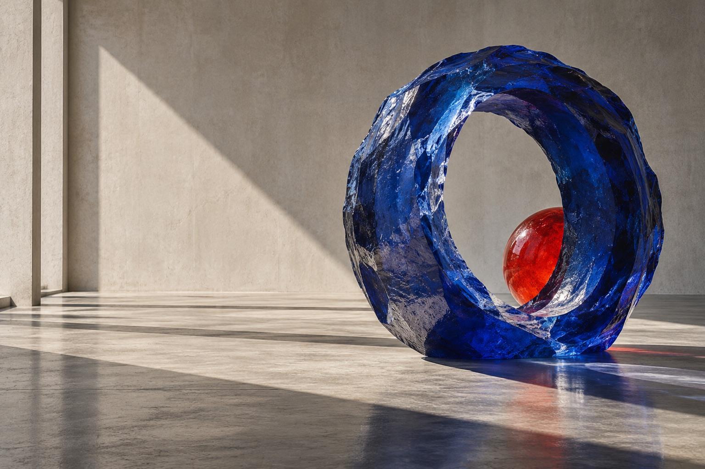

Digitalwork in motion.

FIG. 01 — STUDIES IN FORM 01 / 06We shape digital
things with a pulse.
01 — A SMALL SELECTIONMade to
Made to
make you look.
A collection of visual systems, digital spaces and moments of interaction. Made with curiosity, and a little bit of friction.
END OF SELECTED WORKMORE THINGS ARE TAKING SHAPE ↘
02 — THE STUDIOA PRACTICE OF ATTENTION
The internet is a place.
We make it feel like one.
FR
AM
E.
AM
E.
FRAME is an independent digital practice working across identity, image and interaction. We partner with people who want to leave a feeling behind — not just a footprint.
SMALL BY DESIGNOPEN BY NATUREWORKING EVERYWHERE
03 — OPEN STUDIESNot every idea
Not every idea
needs a brief.
Small things from the edges of the desk. Move your pointer through the field.
STUDY NO. 008 / LIGHT & MATTERMOVE THROUGH THE FRAME ↗
X 00 Y 00
04 — THE NEXT FRAMECURRENTLY OPEN FOR SELECT WORK